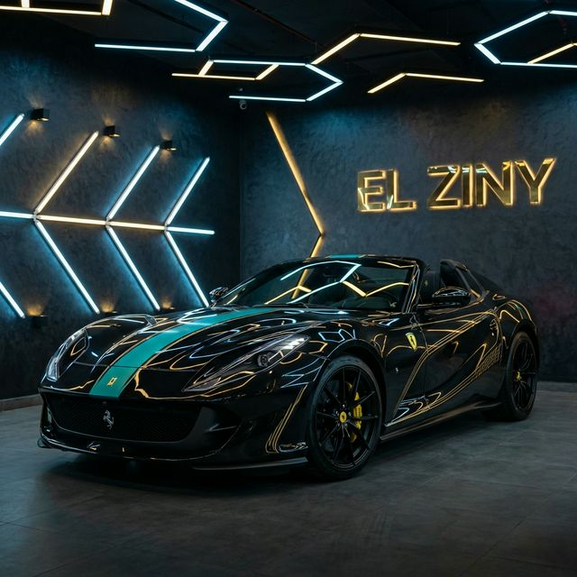
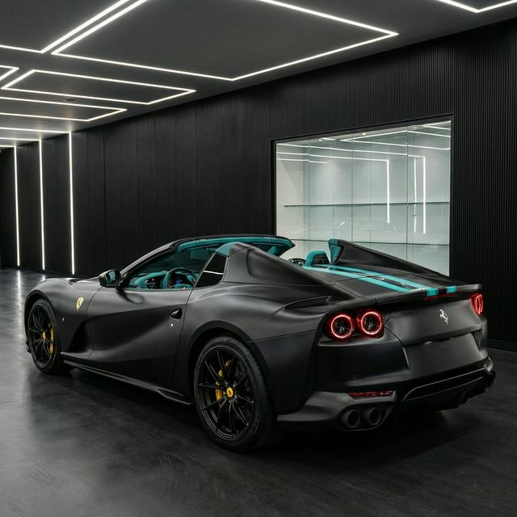
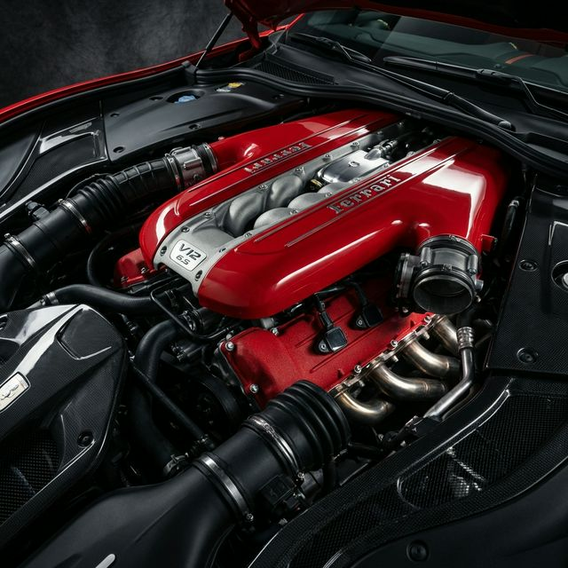
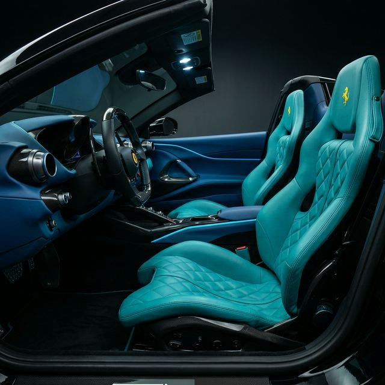
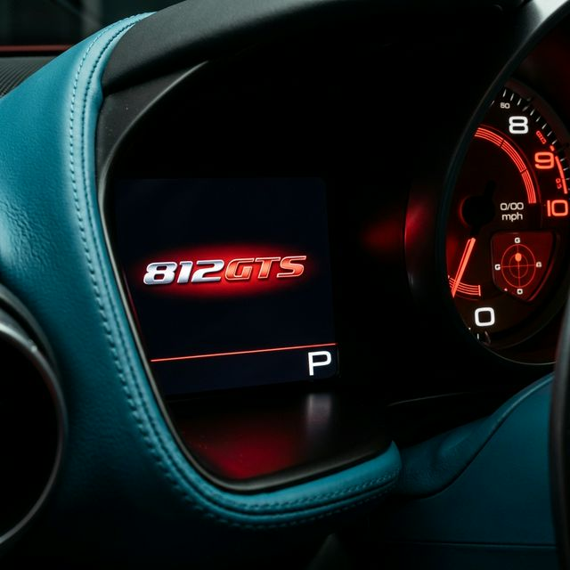

The 812 GTS is Ferrari's most powerful series-production open-top grand tourer ever built. Draped in midnight black with bespoke teal racing stripes and hand-laid gold pinstripe artwork, this one-of-one commission breathes through a naturally aspirated 6.5-liter V12 producing 789 horsepower at 8,500 rpm — a sound unlike anything else on earth. Inside, a custom teal leather cabin with hand-embroidered golden prancing horses transforms every drive into a singular event.

In an era of electrification, the 812 GTS stands as Ferrari's defiant hymn to the naturally aspirated V12. Its 6,496cc engine revs beyond 8,900 rpm with a mechanical ferocity that can only be experienced with the roof down — every mechanical note amplified, every downshift punctuated by a crackle from the quad exhausts.



The teal-and-black interior is a bespoke Tailor Made commission — Schedoni leather wrapped in a colorway chosen to contrast the black exterior. The yellow prancing horse, hand-embroidered into each headrest, is the final signature of a car that belongs to no one else on earth. This is Ferrari ownership at its most personal.